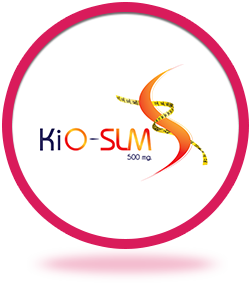

KiO SLM
YURI by SeoulSecret (ยูริ บาย โซลซีเคร็ท) กล้าท้าวัด
ลด 9 จุดสำคัญ ด้วยเทคโนโลยี KiO SLM อันประกอบ
ไปด้วย KiOnutrime-BLOC ไคโตซานจากพืช ลิขสิทธิ์
เฉพาะจากเบลเยี่ยม และสารสกัดจากธรรมชาติ
4 ชนิด ซึ่งให้ผลลัพธ์คือ
S – Slim down รูปร่างดูบางลง
L – Living in shape รูปร่างอยู่ทรง
M – Match with any meal ใช้ได้ทั้งมื้อปกติ และมื้อหนัก
KiOnutrime-BLOC คืออะไร
• ไคโตซานจากพืช ลิขสิทธิ์เฉพาะจากเบลเยี่ยม
• บล็อกไขมันได้อย่างมีประสิทธิภาพ
• ผลการวิจัยพบว่า KiOnutrime-BLOC ช่วยป้องกัน
การสะสมไขมันและนํ้าหนักตัวเพิ่ม ได้สูงสุดถึง 40%*
*Pharmacokinetic,Nutrition and Toxicology
Unit – Louvain Catholic University, Belgium
4 สารสกัดจากธรรมชาติ มาจากไหน
-
สารสกัดจากชาเขียว อุดมด้วยสาร EGCG ที่มี
คุณสมบัติช่วยกระตุ้น ระบบการเผาผลาญของร่างกาย
จึงช่วยสลายไขมันสะสมได้เป็นอย่างดี
-
สารสกัดเมล็ดพริกไทยดำอุดมด้วย Piperine ที่มี
คุณสมบัติช่วยเผาผลาญไขมันเก่า
-
สารสกัดเมล็ดกาแฟเขียว อุดมด้วย Chlorogenic acid
(CGA) ที่มีคุณสมบัติช่วยลดการสะสมแป้งรวมทั้งมี
ส่วนช่วยเผาผลาญไขมันเก่า
-
L- Carnitine L- Tartate ที่มีคุณสมบัติช่วยเสริมสร้าง
พลังงาน และ เผาผลาญไขมัน ขณะออกกำลังกาย